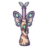

แกะเมฆจ่าฝูง
มอนธาตุลม Lv 46–54
เจอที่
| แมพ | โซน | Lv | ภูมิภาค |
|---|---|---|---|
| เกาะหินลอยลม | 46–54 | ที่ราบสูง | |
| เกาะหินลอยลม | เกาะลอยไกล | 52–54 | ที่ราบสูง |
| สะพานเชือกข้ามผา | เสาหินกังหันหัก | 52–54 | ที่ราบสูง |
| เกาะลอยล่ามโซ่ | 46–54 | ที่ราบสูง | |
| เกาะลอยล่ามโซ่ | เสาโซ่ยักษ์ | 52–54 | ที่ราบสูง |
ค่าสถานะตามเลเวล
| Lv | HP | ATK | DEF | MDEF | EXP | Job |
|---|---|---|---|---|---|---|
| 46 | 13,385 | 103–154 | 20 | 7 | 83 | 62 |
| 50 | 16,830 | 111–167 | 22 | 8 | 89 | 67 |
| 54 | 20,645 | 120–180 | 24 | 8 | 95 | 71 |
ตีด้วยธาตุไหนดี
แรงขึ้น: ดิน ×1.5 พิษ ×1.25
เบาลง: น้ำ ×0.5 ลม ×0.25
วัตถุดิบที่ดรอป
| ของ | โอกาส | |
|---|---|---|
| กระดิ่งทองเหลืองจ่าฝูง | 55% | 1 ชิ้น (15% ได้ 2) |
อุปกรณ์ที่ดรอป (6)
| ของ | โอกาส |
|---|---|
| 0.25% | |
| ชุดนักย่องเงา (เสื้อ) | 0.15% |
| ชุดนักย่องเงา (กางเกง + รองเท้า) | 0.15% |
| 0.12% | |
 ลูกซองผีเสื้อราตรี | 0.06% |
| ชุดนักย่องเงา (แหวนควันดำ) | 0.05% |
สกิล
ทุบพื้น (Lv 25+) · ทุบพื้น (Lv 60+) · ร่างแข็ง (Lv 60+)